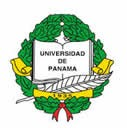

Convenios Internacionales
Universidad Autónoma de Santo Domingo
Convenio de cooperación académica con la Universidad Autónoma de Santo Domingo El presente convenio es la cooperación entre ambas universidades en las áreas de movilidad estudiantil y profesoral, así como la realización de postgrados e investigaciones conjuntas.
Universidad del Desarrollo Empresarial y Pedagógico
Convenio de cooperación académica con Universidad del Desarrollo Empresarial y Pedagógico Convenio que busca la disposición de llevar a cabo el intercambio de experiencias y conocimientos a través de actividades de trabajo, como el desarrollo de lineamientos de investigación, intercambio de avances académicos, intercambios estudiantiles y de docencia, relación interbibliotecaria, y desarrollo de espacios como congresos entre otros.
Universidad Autónoma Metropolitana de México
Convenio de cooperación con la Universidad Autónoma Metropolitana de México Tiene como objetivo, facilitar intercambios científicos y académicos entre ambas instituciones, como favorecer el intercambio de estudiantes entre ambas instituciones y favorecer actividades de enseñanzas y de investigación por medio de proyectos conjuntos.
Universidad de Panamá
Convenio de cooperación académica con Universidad de Panamá Dicho convenio tiene como fin de establecer cooperación para el desarrollo de materia de investigación, extensión, docencia y servicios. Como parte del convenio se desarrollan Intercambios de Profesores e investigadores, Intercambios de información y publicaciones, desarrollo conjunto de programas académicos de extensión y servicios.
Eventos importantes
La Unidad de Investigación y Proyección Social publican artículo científico sobre la detección de residuos de Formaldehído.
La Universidad Dr. Andrés Bello y la Unidad de Investigación y Proyección Social publicaron el pasado 16 de Agosto el artículo científico más reciente desarrollado por el Laboratorio de Inocuidad Alimentaria UNAB. Este consiste en la detección de residuos de Formaldehído (conocido también como formulina o formalina) en productos lácteos podría explicarse por la adición directa de este conservante para prolongar la vida útil de la materia prima o el producto final a temperatura ambiente. El formaldehído no está autorizado como conservante por las normas internacionales y su adición a los productos lácteos está prohibida debido a sus efectos potencialmente nocivos para los consumidores. Esta investigación determinó tanto los niveles de Formaldehído residuales en queso fresco de producción local como su variación según las estaciones del año y su asociación con la temperatura ambiente en cuatro localidades de alto consumo y producción láctea de El Salvador...
NotiUNAB, Boletín de Proyección Social, 8a. edición, 2022.
Medio oficial informativo de las actividades de Proyección Social realizadas en el Centro Regional Sonsonate de la Universidad Doctor Andrés Bello. Contenido: Actividades institucionales de Proyección Social . Actividades de Proyección Social ejecutadas en cátedra. Acciones solidarias.